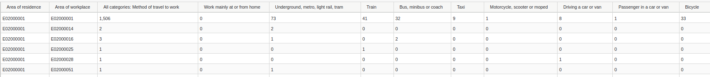
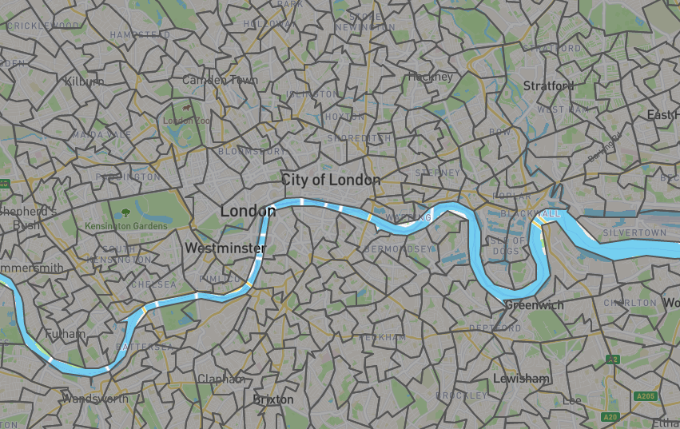
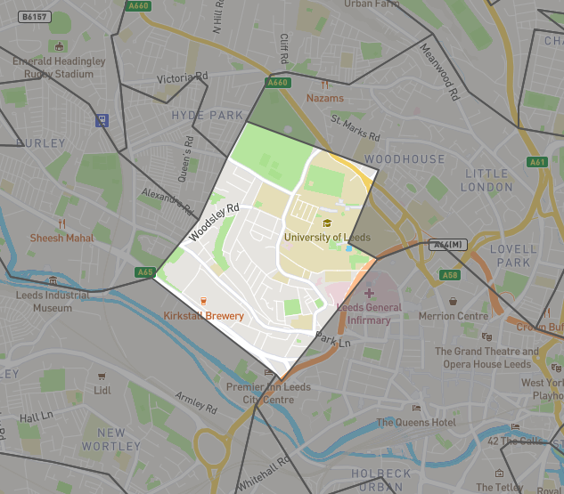
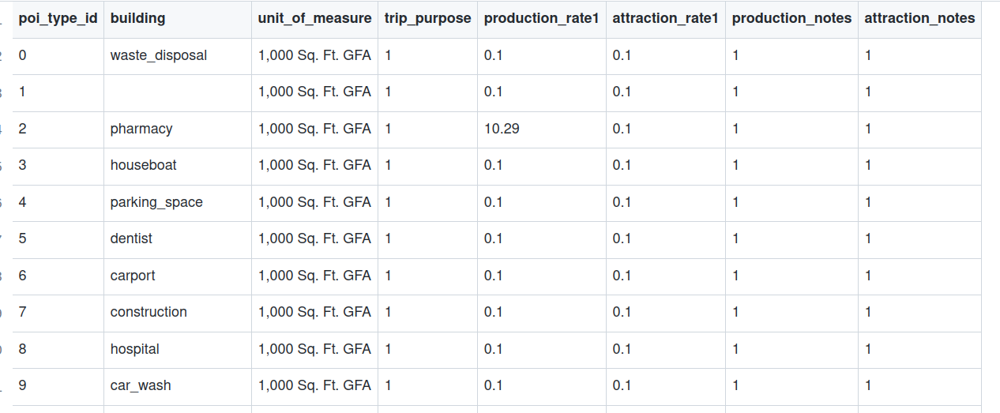
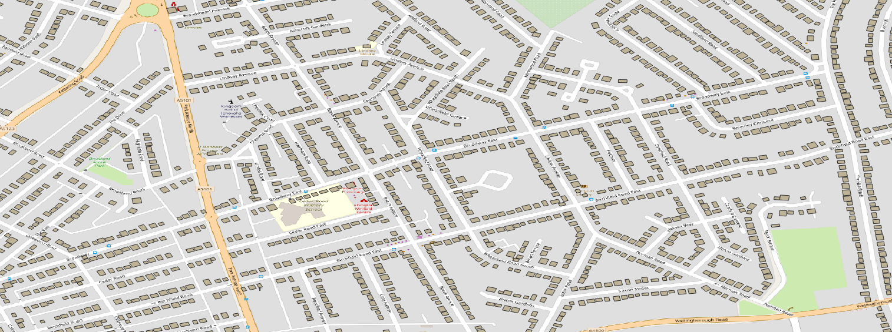

From OD data to agent based modelling for car free futures
Dustin Carlino
Intro
- revealjs: can all of this go on the title screen?
- date / venue
- abst logo
- links
About me
- A/B Street since 2018
- Alan Turing Institute since December 2021
- Not an expert on TDM; I just need it as input
Talk outline
- A/B Street from 10,000 feet
- Travel demand models overview
- From UK OD data to a demand model
- Bonus: Activity models
- Bonus: Mode shift
- Exercises / discussion
Part 1: A/B Street overview
- architecture at a glance
- OSM to map: osm2lanes, osm2polygons, turns, etc
- a traffic sim
- a bunch of apps built on top of commmon platform
Part 2: Demand model overview
What
{
"scenario_name": "minimal",
"people": [
{
"trips": [
{
"departure": 10000,
"origin": {
"longitude": -122.303723,
"latitude": 47.6372834
},
"destination": {
"longitude": -122.31905,
"latitude": 47.63786
},
"mode": "Bike",
"purpose": "Meal"
},
{
"departure": 12000000,
"origin": {
"longitude": -122.31905,
"latitude": 47.63786
},
"destination": {
"longitude": -122.3075948,
"latitude": 47.6394773
},
"mode": "Walk",
"purpose": "Recreation"
}
]
}
]
}https://a-b-street.github.io/docs/tech/dev/formats/scenarios.html
What
- More attributes about people
- vehicle ownership
- routing preference
- willing to pay toll road
- comfortable biking up-hills, at night, alongside fast traffic
What
- One “typical” weekday?
- Different scenario for weekends, special events
- People have different travel behavior daily
- Dangers of disaggregation
Use cases
- traffic simulation
- low-traffic neighborhoods: where do people drive, to predict detours
- PCT & Ungap the Map: look for short driving trips that might cycle instead
- RAMP: daily behavior in shared spaces for COVID transmission
- broken down by activity – entertainment, work, home, retail
- lockdown behavior, risk at venues
Some open source travel demand models
Part 3: Let’s build one for the UK!
Input data
wu03ew_v2: 2011, Location of usual residence and Place of work by Method of travel to work- Old, pre-pandemic
- Only home -> work
Input data: MSOA zones
Overall idea
- For each (origin, destination, mode) desire line
- Repeat for the number of trips here
- Sample an origin and destination from the MSOA
- Create a person who goes home -> work in AM, work -> home in PM
- Repeat for the number of trips here
Desire lines
{
from_zone: zone123,
to_zone: zone456,
mode: walk, bike, drive...,
number_trips: 500
}- Re-shape the input into this format
- One mode per entry
- Filter + simplify the modes
- Why have an intermediate common format?
Jittering: sampling an origin or destination
- Just inside the study area
- odjitter
- Random points?
- Origins: buildings where people live
- Destinations: buildings where people work
Buildings from OpenStreetMap tags

- Building type is rarely tagged
Buildings from OpenStreetMap tags

- Make sure your library gives you the right data,
building=shop - Just look at the data in OSM
Weighted choices (for origins)
- single-family home vs tower block
- area of the polygon
building:levels
- Colouring London
- Seattle housing units
- Use zoning codes?
Trip attractor tables (for destinations)
- cafe vs shopping mall
- Trip attractor table
- ITE publishes one
What data could help us pick better?
- Desire line breakdown by Standard Industry Codes?
Aside: missing buildings in OSM
- OSM isn’t perfect, check your data
- Procedural generation
- limitations
- Alternate data: OS building footprints?
Study area size

- We can’t just keep expanding our study area forever
- Some trips will begin or end off-map
- Use % overlap to scale number of trips
Jittering when out-of-bounds

- We don’t know off-map buildings
- Snap to a border
- Nearest Euclidean distance?
- Weight by road type?
- Nearest Euclidean distance?
- Quickly pruning desire lines
- Or just do pathfinding on a larger map?
Popping the stack
- Issues we covered
- OSM building tagging
- Missing OSM buildings
- Partly overlapping zones
- Off-map origins/destinations
Enjoying the results
- Let’s simulate the results!
- Dangers of using a microsimulation
- Routing
- Traffic signal timing
- Parking
- Conflicting movements near complex junctions
Part 4: Bonus: Activity models
Limitations of the previous approach:
- You need data
- Only home to work
http://play.abstreet.org/papers/synthpop/strawmen.html#activity-model
Part 5: Bonus: Mode shift
https://a-b-street.github.io/docs/software/ungap_the_map/tech_details.html#predict-impact
Part 6: Exercises / discussion
install
import a new place
procgen buildings, use qgis or geojson.io to look
use R to transform UK or other data into desire line format?
or: abstr for scenario.json files
discussion: how to calibrate models to real traffic counts?